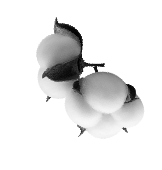
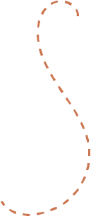
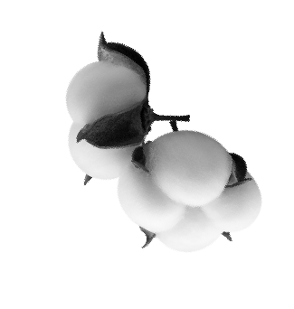
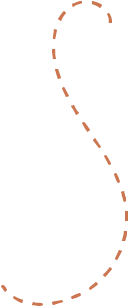
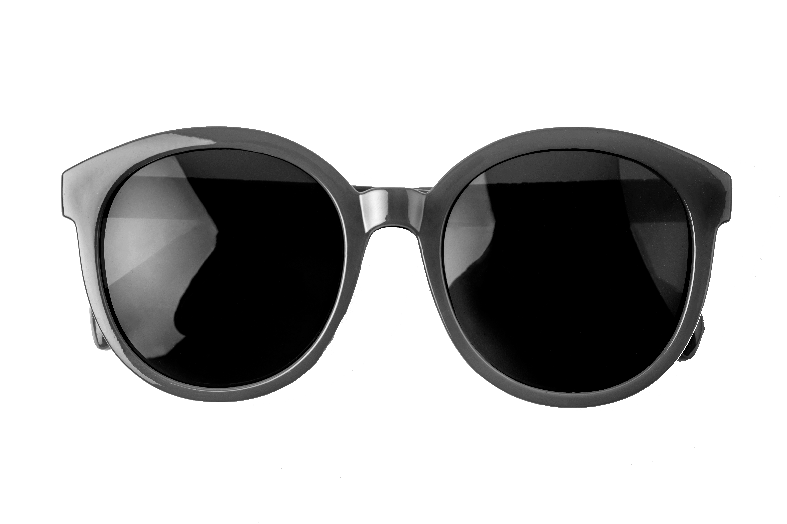
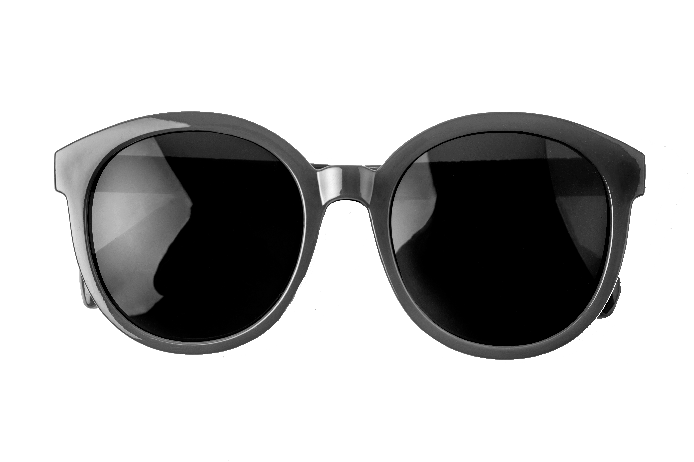
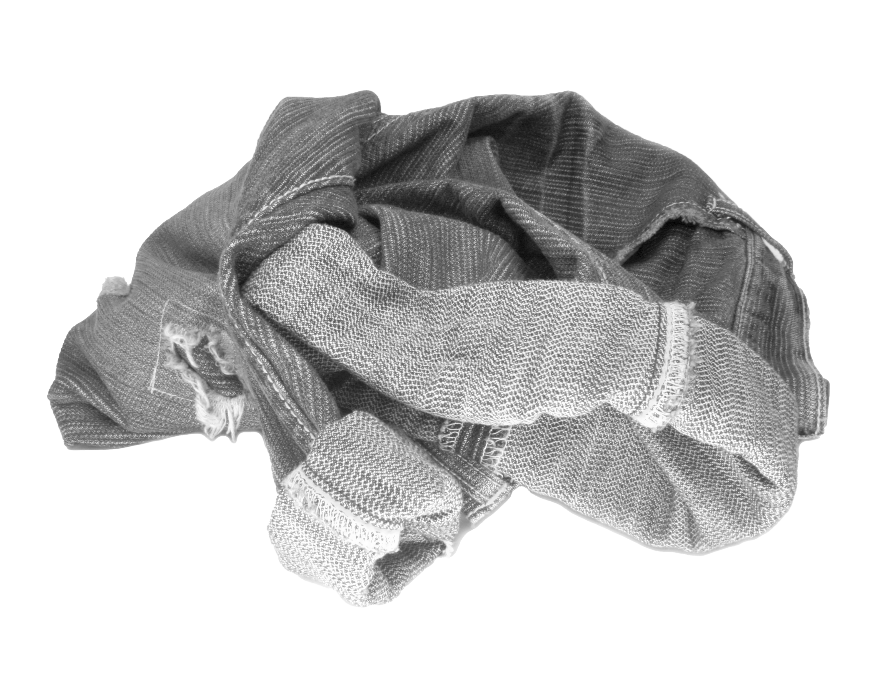
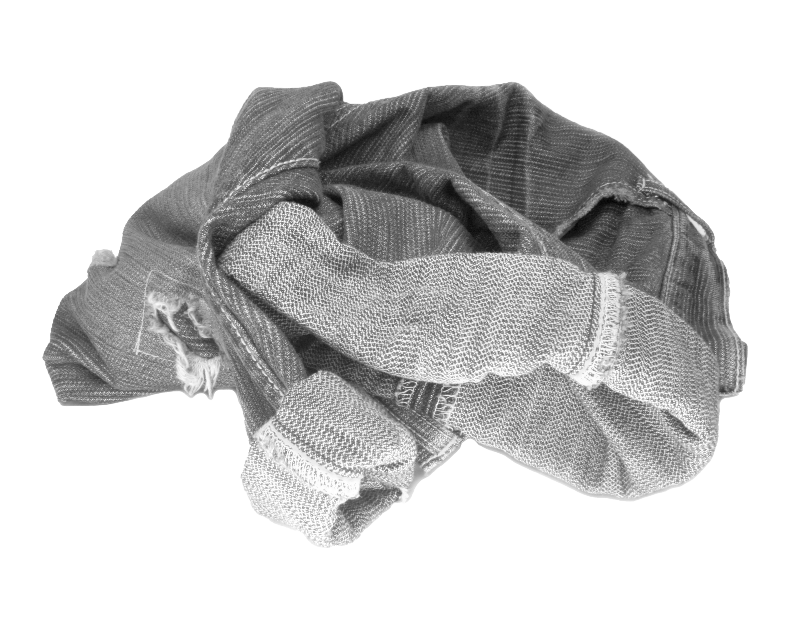

 

 



¿Sabes cómo afecta el fast fashion a nuestro planeta?
Por: Aremi Manrique y Laboratorio de Visualización de Datos
2024

El 70%
de la superficie está cubierta de agua
97.5%
corresponde a agua salada
Solo
2.5%
es agua dulce
El
65%
Se encuentra en glaciares, cimas nevadas y permahielo
El
30.1%
en aguas subterráneas
únicamente el
0.4%
está disponible para consumo humano
De esta mínima cantidad de agua disponible en nuestro planeta
El
20%
son aguas residuales de la industria textil
Este es el inicio...
del impacto de los productos que consumimos
Nuestra huella ecológica se relaciona directamente con la huella ecólogica de dichos productos. Para comprenderla, debemos considerar los múltiples impactos que tienen a lo largo de su ciclo de vida.
Ciclo de vida de una prenda
Aquí es donde intervienen varios procesos, desde la producción de la fibra, hasta la eliminación de residuos.
Para saber realmente el impacto, hicimos un análisis general de cada etapa